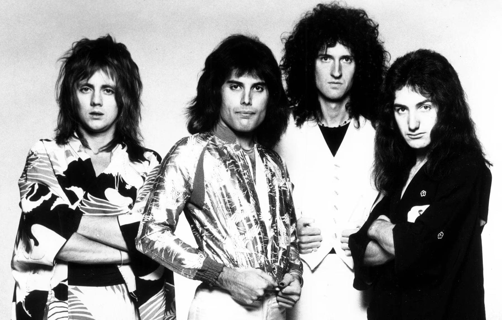
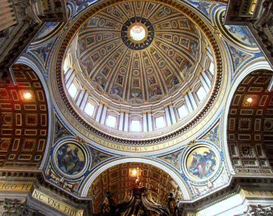
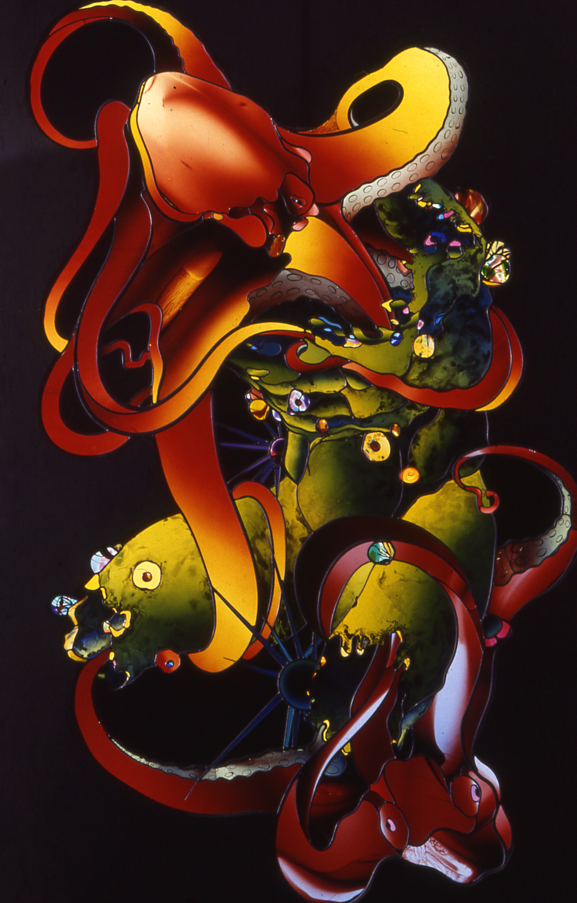

Queen is a British Rock band that performs with camp theatrical style mixed with heavy metal and glam rock. The members were (from left to right on the image above) Roger Taylor, Freddie Mercury, Brian May, and John Deacon, with Freddie Mercury as the main vocalist and principal song writer.
Something about them that draws my inspiration and curiosity is the mere fact that Freddie Mercury was so free and extravagant. He pushed the members past their fears of being “normal” and created their loud and flamboyant character simply because he wanted them to be noticed all around the world. Along with their style is their music which compared to other types of rock, heavy metal, or other genres, Queen’s sound changes almost with every song making their style very fluid and flexible. These characteristics are what draws my attention and why I consider them to be a part of my inspiration in design. It is because they pushed their limits no matter what others were saying about them and they were able to be one of the most successful bands of their time and of today because of it.
https://www.britannica.com/topic/Queen-British-rock-group

Michelangelo is a fifteenth and sixteenth century European artist who was profound in sculptures, painting, and architecture.
What inspires me the most about Michelangelo is his technique. I have always been drawn into European artwork and with Michelangelo being one of the most influential artists in history, his work is something that I’ve been able to see and experience all around the world. I don’t think that I would particularly have a favorite piece by him, probably because he is so versatile in the job, but I can say that I do love his attention to detail and his ability to convey a story or scene with images and sculptures. His craftsmanship particularly in stone and marble are absolutely mesmerizing and his ability to capture the smallest of details in a person is something that requires the most steady hand and just the utmost attention and understanding of details to convey.
https://www.getty.edu/art/exhibitions/michelangelo_drawings/explore.html

Narcissus Quagliata is a painter, a glass artist, a teacher, and a poet. He is most known for creating new pathways for glass artwork and is best known for ‘The Dome of Light: Wind, Fire, and Time’ located in Taiwan.
To be honest, Quagliata is someone who I had to look up for this assignment. I knew I found inspiration in stained glass artwork but I have never really looked into specific work or artists in the field. When I did some research on stain glass artists, Quagliata came up and after looking at his portfolio, I found his work to be very interesting and very different from your traditional stain glass work. His work is very compelling and he does an amazing job at combining elements that wouldn’t typically belong together but look so incredible when he does mix them. As of today, one of my favorite pieces from his portfolio would be the one I added below. I was unable to find a title for the piece but the way Quagliata combined the octopus with what seems to be a human torso and thighs but then when you look closer, the thighs are more like fish, is beyond your traditional stain glass elements which typically include floral elements or religious elements.
https://narcissusquagliata.com/While working on this assignment, I found that the prompt or requirements were asking for the same information from a previous assignment. I wasn’t entirely sure if we were supposed to use the same inspirational figures from that assignment, but I did. I found putting all of the information into the code to be relatively easy to understand and complete but then when checking to see if the codes were working properly, that is where I struggled. I have issues with coding images and hyperlinks properly. I tried looking up on youtube and google methods on how to fix my image problem and found labeling folders in the easiest way was the best option so I went and changed a few folders to try and make that work, but it still didn’t work. This is something that I would like to figure out and fix before working on any final projects. The next issue I had was the hyperlinks. I used the tag as instructed but still found issues with the link not adding properly (the links don’t actually work). This too, is something I would like to figure out before working on any final projects. Overall, if my images linked properly and the hyperlinks worked, I think my page layout works well. I like how I made my name a smaller header to differentiate from the title of the page while also excluding itself from the h2 tags used for each artist.